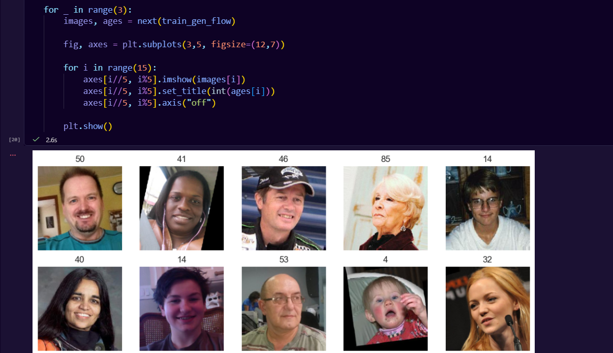

Age verification is a critical compliance requirement for businesses selling age-restricted products such as alcohol. Manual verification processes are prone to human error and inconsistency. The objective of this project was to develop a computer vision model capable of estimating a person's age from a facial image with sufficient precision to support automated verification workflows, reducing the risk of non-compliant sales to minors.
The project was developed as a deep learning regression pipeline using transfer learning on a dataset of 7,591 labeled facial images. Two training configurations were systematically compared to determine the most effective strategy.
Built on ResNet50 pretrained on ImageNet, with a custom regression head consisting of a GlobalAveragePooling2D layer and a single Dense output neuron with ReLU activation. Optimized with Adam at a learning rate of 0.0001.
Evaluated two configurations: a Frozen Backbone
(feature extraction only) and a
Fine-Tuned Backbone (full weight updates). Early
stopping with patience=3 and
restore_best_weights=True was applied to both runs.
Images were preprocessed using ImageDataGenerator with normalization, horizontal flipping, and a 15° rotation range for augmentation. All images were resized to 224×224 — distortion-free given the dataset's uniform square aspect ratio.
EDA revealed a rounding bias at decadal ages (30, 40, 50) from human labeling, a favorable 17.26% representation in the critical 18–24 age range, and a dataset skew toward 20–40 year olds — a limitation that does not compromise the core verification objective.
A baseline model using the mean age as a constant predictor established a reference MAE of 13.31 years and an RMSE of 17.14 years — the minimum threshold any meaningful model must surpass.
| Configuration | Epoch | Train MAE | Train RMSE | Val MAE | Val RMSE | Improvement vs Baseline |
|---|---|---|---|---|---|---|
| 🧊 Frozen Backbone | 13/15 | 13.14 yrs | 17.20 yrs | 13.14 yrs | 17.08 yrs | 1.28% |
| 🔥 Fine-Tuning Backbone | 10/15 | 3.78 yrs | 4.92 yrs | 6.83 yrs | 9.23 yrs | 48.69% |